티스카 굿즈 제작 사례(포트폴리오)
한 줄 요약
공개 사례 167건(품목별 138건, 프로젝트 29건)을 사진과 사양으로 정리했습니다. 모든 품목은 메인 발주 500개부터 제작하며, 사진은 tiska.kr에 공개된 사례 사진입니다.
분야별 보기 골프·스포츠 엔터테인먼트 기업·브랜드·캐릭터 IP 비영리·공익
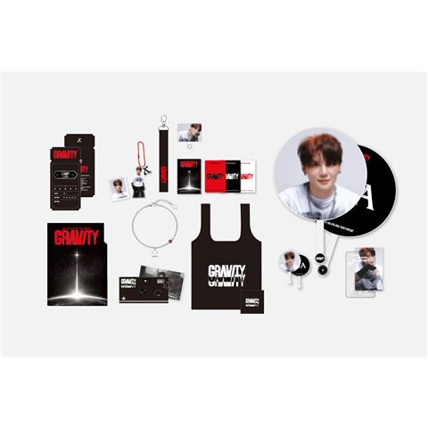
프로젝트 MD 세트김준수(XIA)2026 6th ASIA TOUR CONCERT 「GRAVITY」 IN SEOUL샘플 1일~2주 · 양산 7~20일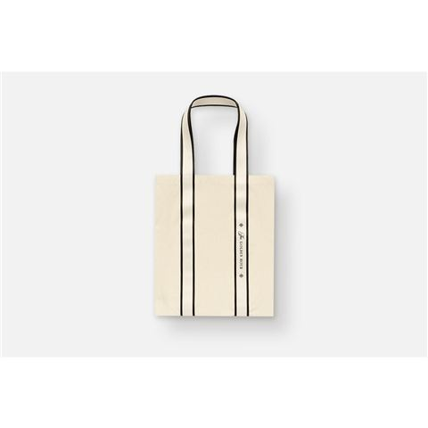
프로젝트 MD 세트아이유(IU)CONCERT 「The Golden Hour」샘플 1일~2주 · 양산 7~20일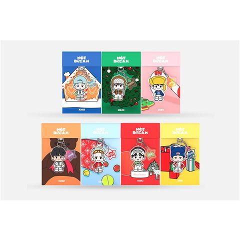
프로젝트 MD 세트엔시티 드림(NCT DREAM)겨울 스페셜 미니앨범 「Candy」샘플 1일~2주 · 양산 7~20일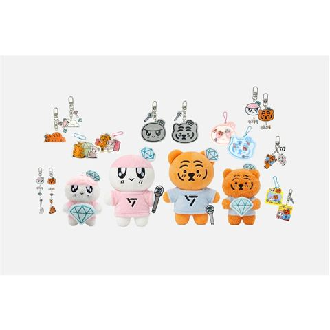
프로젝트 MD 세트세븐틴(SEVENTEEN) x 무직타이거봉봉이 콜라보 MD샘플 1일~2주 · 양산 7~20일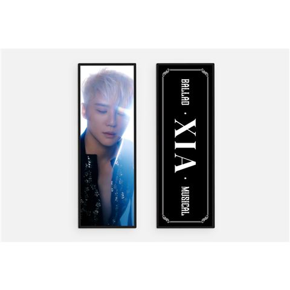
프로젝트 MD 세트김준수(XIA)BALLAD & MUSICAL CONCERT샘플 1일~2주 · 양산 7~20일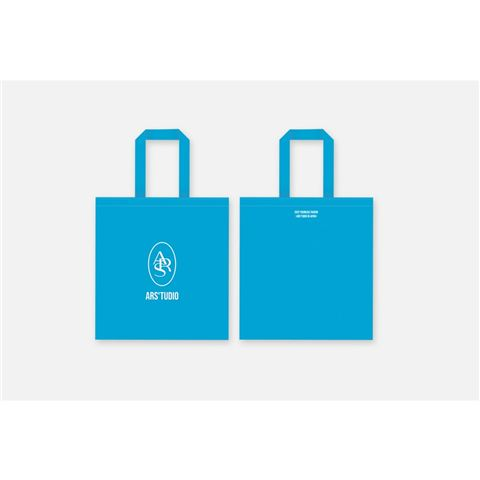
프로젝트 MD 세트갓세븐 영재(GOT7 Youngjae)2022 FANCON 「ARS'TUDIO IN JAPAN」샘플 1일~2주 · 양산 7~20일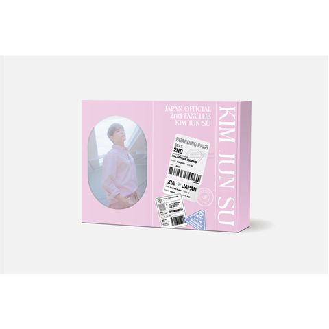
프로젝트 MD 세트김준수(XIA)JAPAN OFFICIAL 2nd FANCLUB KIT샘플 1일~2주 · 양산 7~20일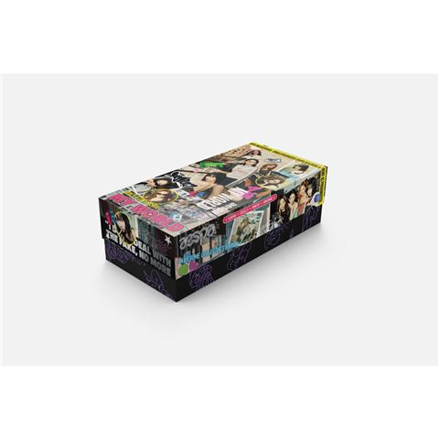
프로젝트 MD 세트에스파(aespa)미니 3집 「MY WORLD」샘플 1일~2주 · 양산 7~20일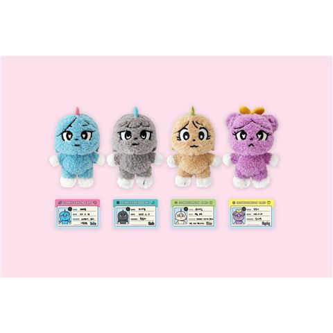
프로젝트 MD 세트에스파(aespa)EXHIBITION 「POTD」샘플 1일~2주 · 양산 7~20일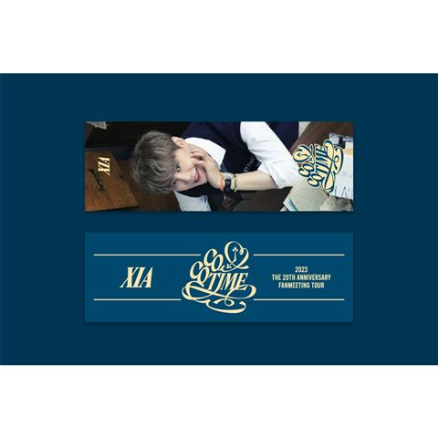
프로젝트 MD 세트김준수(XIA)2023 THE 20TH ANNIVERSARY FANMEETING TOUR 「COCOTIME」샘플 1일~2주 · 양산 7~20일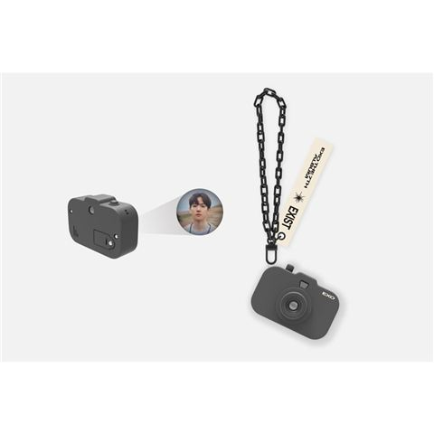
프로젝트 MD 세트엑소(EXO)정규 7집 「EXIST」샘플 1일~2주 · 양산 7~20일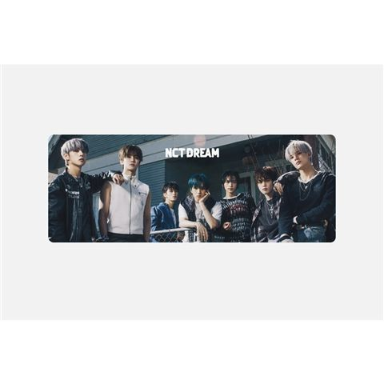
프로젝트 MD 세트엔시티 드림(NCT DREAM)정규 3집 「ISTJ」샘플 1일~2주 · 양산 7~20일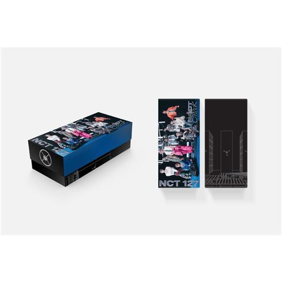
프로젝트 MD 세트엔시티 127(NCT 127)정규 5집 「Fact Check」샘플 1일~2주 · 양산 7~20일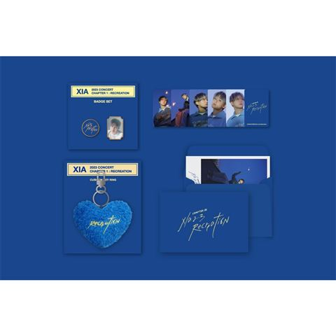
프로젝트 MD 세트김준수(XIA)2023 CONCERT Chapter 1 : Recreation샘플 1일~2주 · 양산 7~20일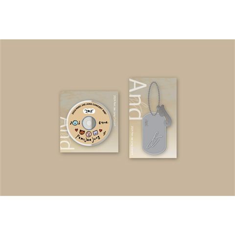
프로젝트 MD 세트박재정(Parc Jae Jung)2024 CONCERT 「AND」샘플 1일~2주 · 양산 7~20일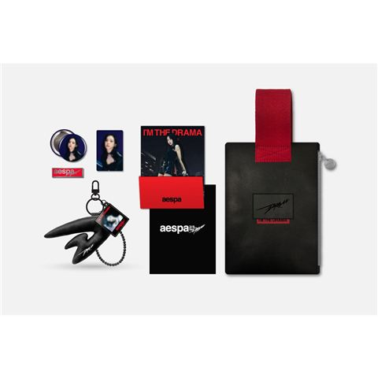
프로젝트 MD 세트에스파(aespa)미니 4집 「Drama」샘플 1일~2주 · 양산 7~20일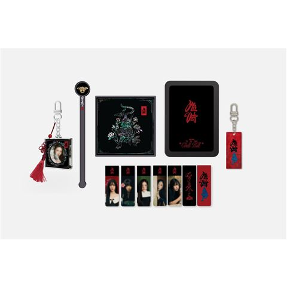
프로젝트 MD 세트레드벨벳(Red Velvet)정규 3집 「Chill Kill」샘플 1일~2주 · 양산 7~20일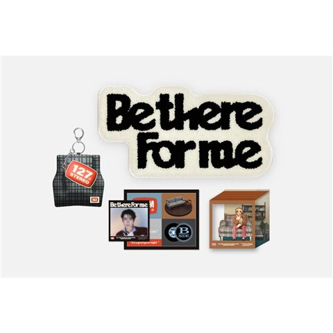
프로젝트 MD 세트엔시티 127(NCT 127)「Be There For Me」 겨울 스페셜샘플 1일~2주 · 양산 7~20일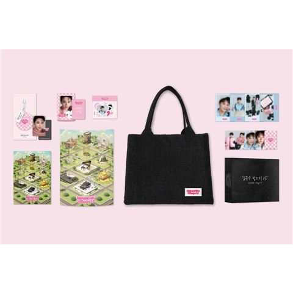
프로젝트 MD 세트김준수(XIA)2025 FAN MEETING 「빌리지 15」샘플 1일~2주 · 양산 7~20일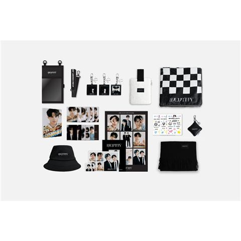
프로젝트 MD 세트JX콘서트2024 CONCERT 「IDENTITY」샘플 1일~2주 · 양산 7~20일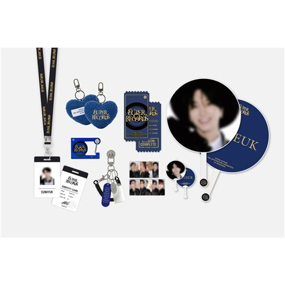
프로젝트 MD 세트슈퍼주니어(SUPER JUNIOR)20th ANNIVERSARY EXHIBITION 「SUPER RECORDS」 IN SHANGHAI샘플 1일~2주 · 양산 7~20일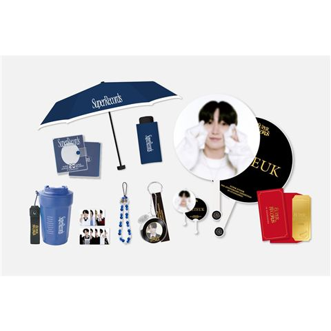
프로젝트 MD 세트슈퍼주니어(SUPER JUNIOR)20th ANNIVERSARY EXHIBITION 「SUPER RECORDS」 IN GUANGZHOU샘플 1일~2주 · 양산 7~20일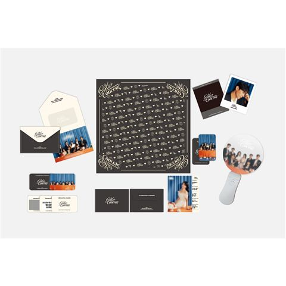
프로젝트 MD 세트팜트리 아일랜드(PALMTREE ISLAND)2025 3rd GALA CONCERT샘플 1일~2주 · 양산 7~20일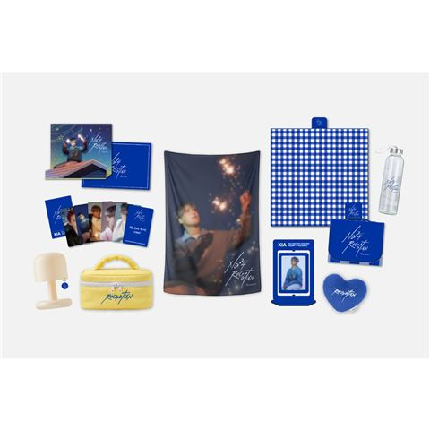
프로젝트 MD 세트김준수(XIA)2024 ENCORE CONCERT Chapter 1 : Recreation샘플 1일~2주 · 양산 7~20일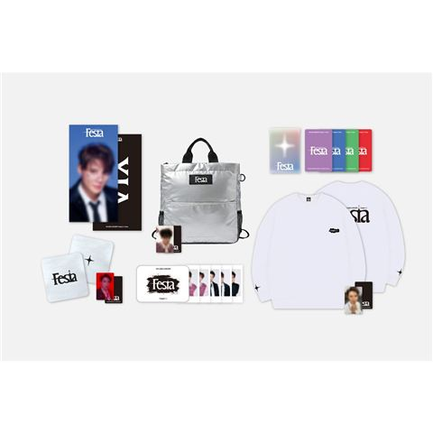
프로젝트 MD 세트김준수(XIA)2025 CONCERT Chapter 2 : Festa샘플 1일~2주 · 양산 7~20일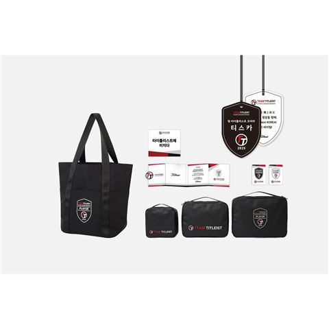
프로젝트 MD 세트팀 타이틀리스트(Team Titleist)2025 CLUB CHAMPIONSHIP샘플 1일~2주 · 양산 7~20일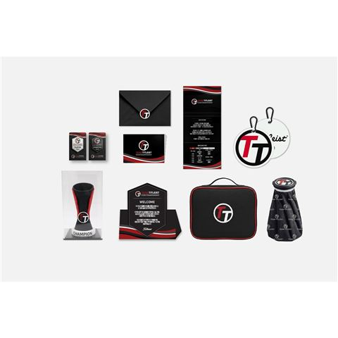
프로젝트 MD 세트팀 타이틀리스트(Team Titleist)2024 CLUB CHAMPIONSHIP샘플 1일~2주 · 양산 7~20일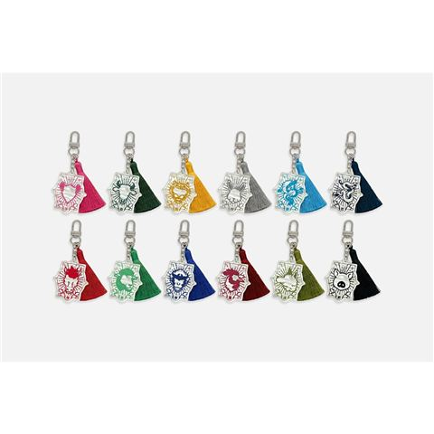
프로젝트 MD 세트드라마 「트웰브(TWELVE)」팝업스토어 MD샘플 1일~2주 · 양산 7~20일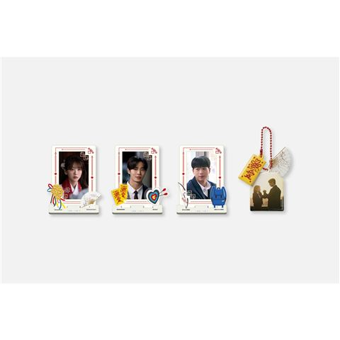
프로젝트 MD 세트드라마 「견우와 선녀」팝업스토어 MD샘플 1일~2주 · 양산 7~20일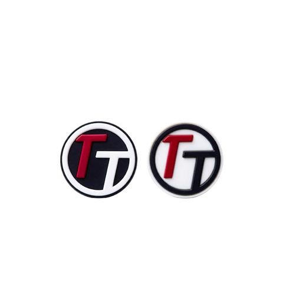
금속·주얼리류타이틀리스트(Titleist)골프 볼마커 2종샘플 1주 · 양산 20일 패브릭·의류류풋조이(FootJoy)모자 접착 스베리샘플 1주 · 양산 20일
패브릭·의류류풋조이(FootJoy)모자 접착 스베리샘플 1주 · 양산 20일- 금속·주얼리류타이틀리스트(Titleist)써지컬 스틸 볼마커 3종샘플 1주 · 양산 20일
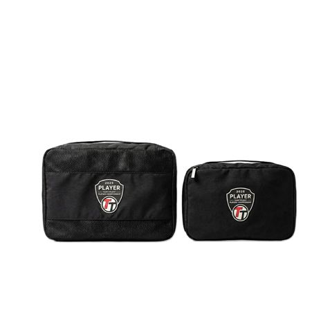
기타(텀블러·우산 등)타이틀리스트(Titleist)여행용 오거나이저 2종 세트샘플 2주 · 양산 20일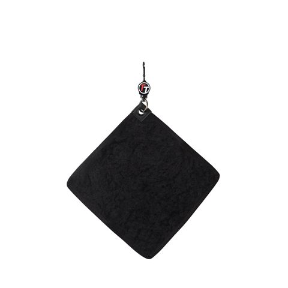
패브릭·의류류팀 타이틀리스트(Team Titleist)실리콘 자석 볼타월샘플 1주 · 양산 20일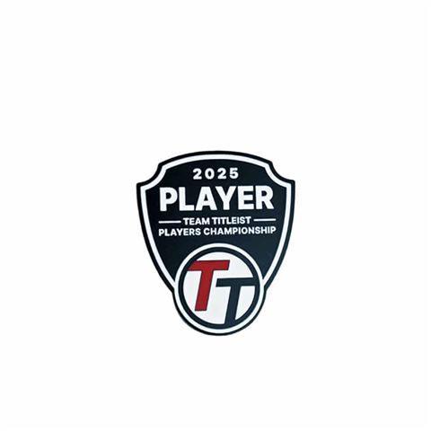
금속·주얼리류타이틀리스트(Titleist)대회 기념 금속 뱃지샘플 1주 · 양산 20일 골프 소품·커버류풋조이(FootJoy)골프백 항공커버샘플 1주 · 양산 20일
골프 소품·커버류풋조이(FootJoy)골프백 항공커버샘플 1주 · 양산 20일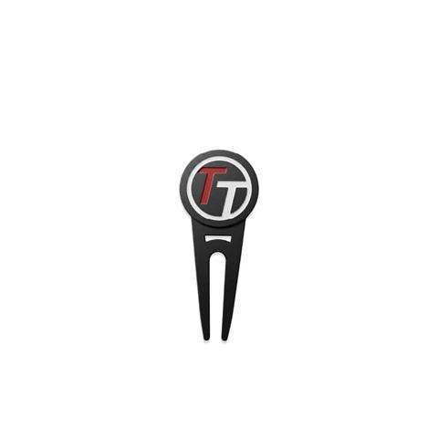
금속·주얼리류타이틀리스트(Titleist)골프 디봇툴샘플 1주 · 양산 20일 가방·파우치류풋조이(FootJoy)방수 워시 파우치샘플 1주 · 양산 20일
가방·파우치류풋조이(FootJoy)방수 워시 파우치샘플 1주 · 양산 20일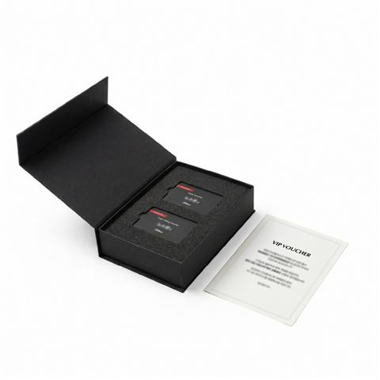
패키지·세트류타이틀리스트(Titleist)VIP 카드 패키지샘플 1주 · 양산 14일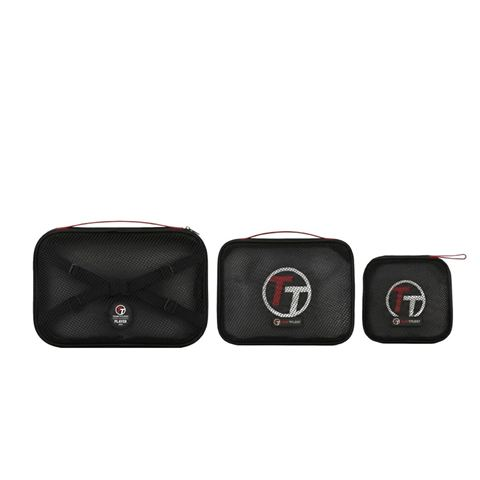
기타(텀블러·우산 등)팀 타이틀리스트(Team Titleist)메쉬 여행 오거나이저 3종샘플 2주 · 양산 20일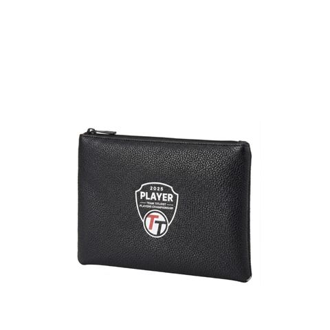
가방·파우치류팀 타이틀리스트(Team Titleist)레자 지퍼 파우치샘플 1주 · 양산 20일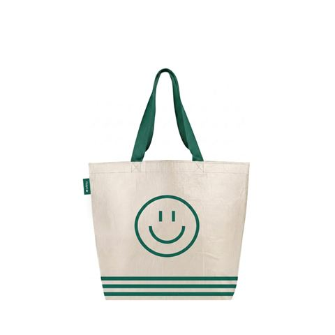
가방·파우치류초록우산(ChildFund Korea)스마일 타포린 토트백샘플 1주 · 양산 20일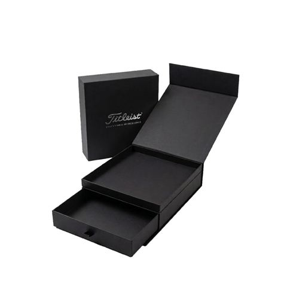
패키지·세트류타이틀리스트(Titleist)서랍형 기프트 패키지샘플 1주 · 양산 14일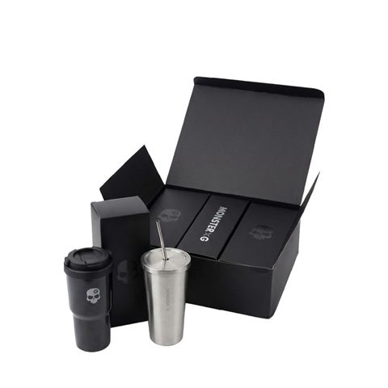
패키지·세트류몬스터지(MONSTER G)텀블러 기프트 패키지샘플 1주 · 양산 14일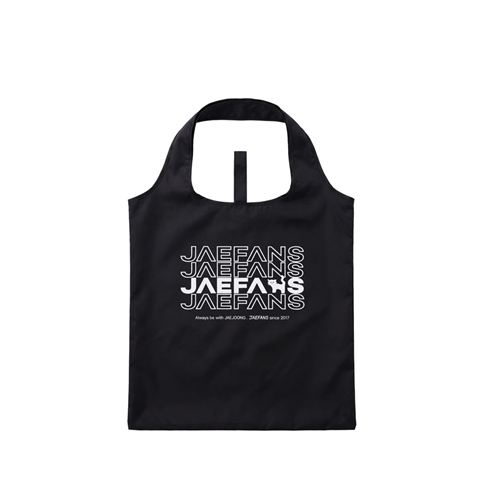
가방·파우치류김재중(Kim Jae Joong)팬굿즈 바쿠백샘플 1주 · 양산 20일 아크릴·키링류에이티즈(ATEEZ)태슬 아크릴 키링샘플 1일 · 양산 7일
아크릴·키링류에이티즈(ATEEZ)태슬 아크릴 키링샘플 1일 · 양산 7일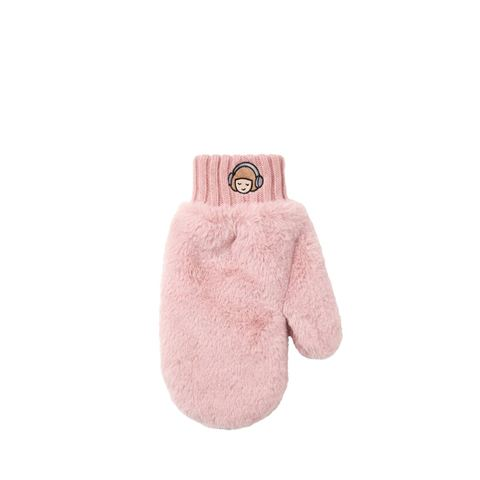
패브릭·의류류드라마 「우영우」드라마 굿즈 장갑샘플 1주 · 양산 20일 실리콘류방탄소년단(BTS)응원봉 실리콘 참샘플 1주 · 양산 20일
실리콘류방탄소년단(BTS)응원봉 실리콘 참샘플 1주 · 양산 20일 가방·파우치류엔시티 드림(NCT DREAM)프린트 캔버스 에코백샘플 1주 · 양산 20일
가방·파우치류엔시티 드림(NCT DREAM)프린트 캔버스 에코백샘플 1주 · 양산 20일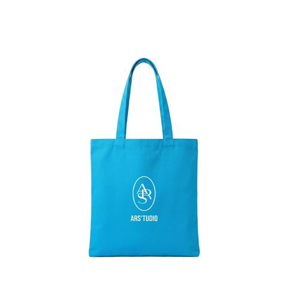
가방·파우치류갓세븐 영재(GOT7 Youngjae)컬러 캔버스 에코백샘플 1주 · 양산 20일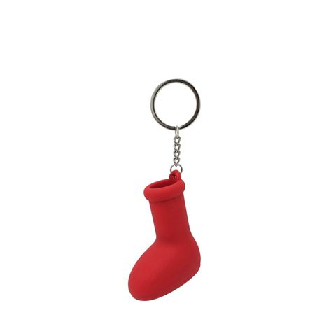
실리콘류대림미술관 미스치프(MSCHF)아톰 부츠 실리콘 키링샘플 1주 · 양산 20일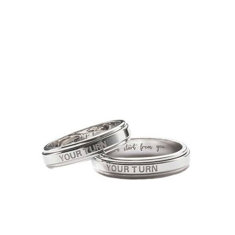
금속·주얼리류굿네이버스(Good Neighbors)캠페인 반지샘플 1주 · 양산 20일 가방·파우치류캔버스 숄더백샘플 1주 · 양산 20일
가방·파우치류캔버스 숄더백샘플 1주 · 양산 20일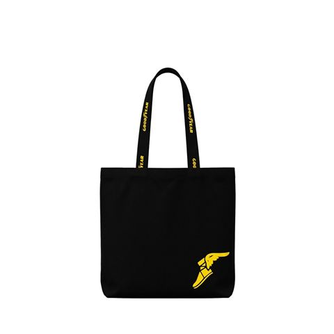
가방·파우치류굿이어타이어(Goodyear)기업 프로모션 에코백샘플 1주 · 양산 20일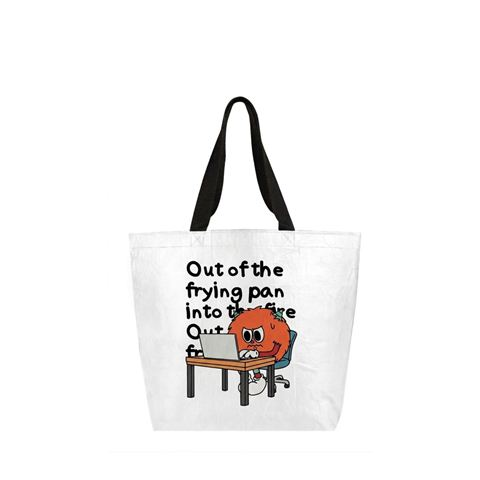
가방·파우치류멜로우빈캐릭터 타포린백샘플 1주 · 양산 20일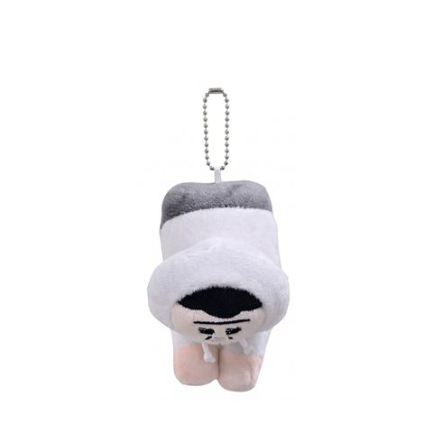
봉제·인형류키크니캐릭터 봉제 인형샘플 1주 · 양산 20일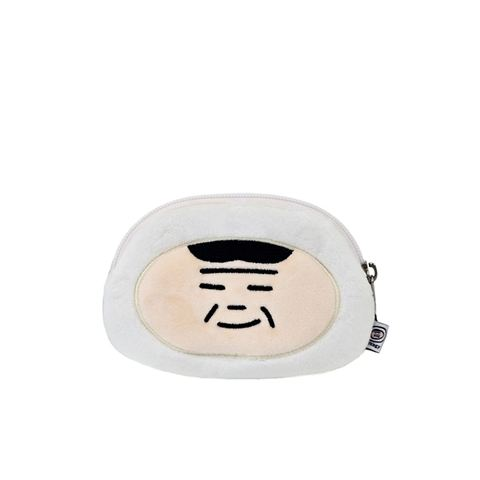
가방·파우치류키크니얼굴형 봉제 파우치샘플 1주 · 양산 20일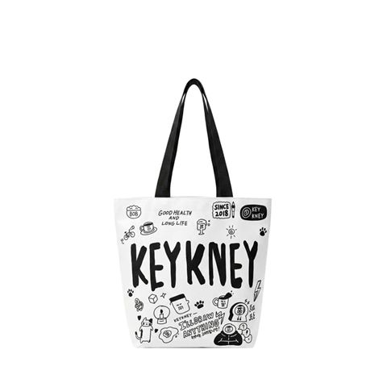
가방·파우치류키크니캐릭터 리유저블백샘플 1주 · 양산 20일- 금속·주얼리류어메이징크리(AMAZING CRE)볼마커 골프티 세트샘플 1주 · 양산 20일
- 패브릭·의류류어메이징크리(AMAZING CRE)골프 볼타월 세트샘플 1주 · 양산 20일
- 가방·파우치류풋조이(FootJoy)스퀘어 리유저블백샘플 1주 · 양산 20일
- 기타(텀블러·우산 등)풋조이(FootJoy)골프 장갑 케이스샘플 2주 · 양산 20일
- 골프 소품·커버류어메이징크리(AMAZING CRE)골프 아이언커버 세트샘플 1주 · 양산 20일
- 가방·파우치류풋조이(FootJoy)골프 슈즈 파우치샘플 1주 · 양산 20일
- 가방·파우치류아디다스(adidas)슬림 노트북 슬리브샘플 1주 · 양산 20일
- 가방·파우치류내셔널지오그래픽(National Geographic)핸들형 노트북 파우치샘플 1주 · 양산 20일
- 가방·파우치류풋조이(FootJoy)컬러블록 노트북 파우치샘플 1주 · 양산 20일
- 금속·주얼리류하성운(Ha Sung Woon)시즌그리팅 목걸이샘플 1주 · 양산 20일
- 실리콘류방탄소년단(BTS)미니 실리콘 피규어샘플 1주 · 양산 20일
- 기타(텀블러·우산 등)타이틀리스트(Titleist)로고 인쇄 텀블러샘플 2주 · 양산 20일
- 봉제·인형류폴킴(Paul Kim)굿즈 봉제 인형샘플 1주 · 양산 20일
- 봉제·인형류멜로우빈캐릭터 러그샘플 1주 · 양산 20일
- 봉제·인형류멜로우빈캐릭터 쿠션샘플 1주 · 양산 20일
- 문구·인쇄류푸바오캐릭터 마우스패드샘플 1주 · 양산 14일
- 실리콘류김재중(Kim Jae Joong)팬키트 실리콘 키링샘플 1주 · 양산 20일
- 골프 소품·커버류스포츠트라이브(SPORTS TRIBE)축구공 레자 네임택샘플 1주 · 양산 20일
- 패키지·세트류타이틀리스트(Titleist)골프 웰컴키트샘플 1주 · 양산 14일
- 가방·파우치류풋조이(FootJoy)세탁겸용 메쉬백샘플 1주 · 양산 20일
- 가방·파우치류풋조이(FootJoy)미니 골프 슈즈파우치샘플 1주 · 양산 20일
- 금속·주얼리류풋조이(FootJoy)실리콘 퍼터키퍼 볼마커 세트샘플 1주 · 양산 20일
- 가방·파우치류타이틀리스트(Titleist)GTS 골프용품 파우치샘플 1주 · 양산 20일
- 골프 소품·커버류타이틀리스트(Titleist)블랙 골프 네임택샘플 1주 · 양산 20일
- 아크릴·키링류한해(HANHAE)아크릴 포토 키링샘플 1일 · 양산 7일
- 금속·주얼리류풋조이(FootJoy)자석 금속 뱃지샘플 1주 · 양산 20일
- 가방·파우치류타이틀리스트(Titleist)문구 파우치 세트샘플 1주 · 양산 20일
- 가방·파우치류풋조이(FootJoy)골프 티 파우치샘플 1주 · 양산 20일
- 문구·인쇄류타이틀리스트(Titleist)굿즈 스티커 세트샘플 1주 · 양산 14일
- 골프 소품·커버류타이틀리스트(Titleist)화이트 골프 네임택샘플 1주 · 양산 20일
- 골프 소품·커버류팀 타이틀리스트(Team Titleist)투톤 레자 얼라이먼트 스틱 커버샘플 1주 · 양산 20일
- 패키지·세트류초록우산(ChildFund Korea)골프공 6구 기프트세트샘플 1주 · 양산 14일
- 패키지·세트류초록우산(ChildFund Korea)골프공 3구 기프트세트샘플 1주 · 양산 14일
- 가방·파우치류초록우산(ChildFund Korea)중형 리유저블백샘플 1주 · 양산 20일
- 가방·파우치류초록우산(ChildFund Korea)소형 리유저블백샘플 1주 · 양산 20일
- 금속·주얼리류타이틀리스트(Titleist)골프대회 기념 금속 뱃지샘플 1주 · 양산 20일
- 금속·주얼리류타이틀리스트(Titleist)써지컬 스틸 메달샘플 1주 · 양산 20일
- 가방·파우치류김준수(XIA)투웨이 실버 토트백샘플 1주 · 양산 20일
- 금속·주얼리류김준수(XIA)써지컬 스틸 팔찌샘플 1주 · 양산 20일
- 금속·주얼리류김준수(XIA)블랙 무광 금속 뱃지샘플 1주 · 양산 20일
 아크릴·키링류김준수(XIA)아크릴 맥세이프 카드지갑샘플 1일 · 양산 7일
아크릴·키링류김준수(XIA)아크릴 맥세이프 카드지갑샘플 1일 · 양산 7일- 가방·파우치류김준수(XIA)폴더블 마켓백샘플 1주 · 양산 20일
- 기타(텀블러·우산 등)김준수(XIA)일회용 필름카메라샘플 2주 · 양산 20일
- 가방·파우치류김준수(XIA)도시락 멀티 파우치샘플 1주 · 양산 20일
- 기타(텀블러·우산 등)김준수(XIA)가죽 여권 케이스샘플 2주 · 양산 20일
- 봉제·인형류세븐틴(SEVENTEEN) x 무직타이거뽀글이 봉제 인형샘플 1주 · 양산 20일
- 봉제·인형류세븐틴(SEVENTEEN) x 무직타이거캐릭터 봉제 인형샘플 1주 · 양산 20일
- 아크릴·키링류세븐틴(SEVENTEEN) x 무직타이거아크릴 미러 키링샘플 1일 · 양산 7일
 아크릴·키링류세븐틴(SEVENTEEN) x 무직타이거아크릴 쉐이커 키링샘플 1일 · 양산 7일
아크릴·키링류세븐틴(SEVENTEEN) x 무직타이거아크릴 쉐이커 키링샘플 1일 · 양산 7일- 실리콘류세븐틴(SEVENTEEN) x 무직타이거PVC 튜브 키링샘플 1주 · 양산 20일
- 패브릭·의류류풋조이(FootJoy)실리콘 자석 골프 볼타월샘플 1주 · 양산 20일
- 패키지·세트류타이틀리스트(Titleist)시상식 트로피 패키지샘플 1주 · 양산 14일
- 가방·파우치류풋조이(FootJoy)블랙 보냉 백팩샘플 1주 · 양산 20일
- 패키지·세트류기아자동차(Kia)연말 기프트 패키지샘플 1주 · 양산 14일
- 패키지·세트류기아자동차(Kia)와인잔 기프트 패키지샘플 1주 · 양산 14일
- 금속·주얼리류풋조이(FootJoy)골프 볼마커 기프트세트샘플 1주 · 양산 20일
- 금속·주얼리류풋조이(FootJoy)골프 볼마커 디봇툴 세트샘플 1주 · 양산 20일
- 금속·주얼리류엘라스트(E'LAST)팬클럽 금속 뱃지샘플 1주 · 양산 20일
 아크릴·키링류에이티즈(ATEEZ)체인 스트랩 키링샘플 1일 · 양산 7일
아크릴·키링류에이티즈(ATEEZ)체인 스트랩 키링샘플 1일 · 양산 7일- 봉제·인형류엔시티 127(NCT 127)미니어처 소파 키링샘플 1주 · 양산 20일
- 봉제·인형류엔시티 127(NCT 127)자수 러그샘플 1주 · 양산 20일
- 봉제·인형류초록우산(ChildFund Korea)초뭉이 봉제 인형키링샘플 1주 · 양산 20일
- 가방·파우치류키크니강아지 봉제 파우치샘플 1주 · 양산 20일
- 가방·파우치류키크니고양이 봉제 파우치샘플 1주 · 양산 20일
- 금속·주얼리류하이라이트(Highlight)기념일 금속 뱃지샘플 1주 · 양산 20일
- 금속·주얼리류폴킴(Paul Kim)금속 에폭시 뱃지샘플 1주 · 양산 20일
- 아크릴·키링류위아이(WEi)아크릴 하트 응원부채샘플 1일 · 양산 7일
- 패브릭·의류류타이틀리스트(Titleist)골프 쿨링타올샘플 1주 · 양산 20일
- 가방·파우치류풋조이(FootJoy)보냉 백팩샘플 1주 · 양산 20일
- 가방·파우치류풋조이(FootJoy)신발수납 보스턴백샘플 1주 · 양산 20일
- 가방·파우치류풋조이(FootJoy)방수 워시백샘플 1주 · 양산 20일
- 가방·파우치류타이틀리스트(Titleist)쓰리웨이 노트북 백팩샘플 1주 · 양산 20일
- 가방·파우치류타이틀리스트(Titleist)텀블러 슬리브 파우치샘플 1주 · 양산 20일
- 가방·파우치류풋조이(FootJoy)경량 2포켓 백팩샘플 1주 · 양산 20일
- 골프 소품·커버류타이틀리스트(Titleist)골프 클럽 헤드커버샘플 1주 · 양산 20일
- 가방·파우치류타이틀리스트(Titleist)포켓 숄더백샘플 1주 · 양산 20일
- 가방·파우치류타이틀리스트(Titleist)미니 토트백샘플 1주 · 양산 20일
- 패브릭·의류류팀 타이틀리스트(Team Titleist)여성용 랩 샤워가운샘플 1주 · 양산 20일
- 가방·파우치류풋조이(FootJoy)블랙 타포린 토트백샘플 1주 · 양산 20일
- 가방·파우치류타이틀리스트(Titleist)비치 메쉬 토트백샘플 1주 · 양산 20일
- 골프 소품·커버류팀 타이틀리스트(Team Titleist)골프 얼라이먼트 스틱 커버샘플 1주 · 양산 20일
- 가방·파우치류풋조이(FootJoy)패커블 보스턴백샘플 1주 · 양산 20일
- 기타(텀블러·우산 등)풋조이(FootJoy)여행용 오거나이저 세트샘플 2주 · 양산 20일
- 기타(텀블러·우산 등)타이틀리스트(Titleist)얼음주머니 스트랩 세트샘플 2주 · 양산 20일
- 기타(텀블러·우산 등)타이틀리스트(Titleist)골프 프리미엄 키트샘플 2주 · 양산 20일
- 가방·파우치류팀 타이틀리스트(Team Titleist)융털 레자 파우치샘플 1주 · 양산 20일
- 패브릭·의류류풋조이(FootJoy)골프 팔토시샘플 1주 · 양산 20일
- 가방·파우치류풋조이(FootJoy)골프 메쉬 토트백샘플 1주 · 양산 20일
- 패브릭·의류류굿이어타이어(Goodyear)스포츠 양말샘플 1주 · 양산 20일
- 패브릭·의류류굿이어타이어(Goodyear)스포츠 타올샘플 1주 · 양산 20일
- 가방·파우치류타이틀리스트(Titleist)차량 트렁크 정리백샘플 1주 · 양산 20일
- 가방·파우치류풋조이(FootJoy)미니 골프티 파우치샘플 1주 · 양산 20일
- 기타(텀블러·우산 등)풋조이(FootJoy)실버 코팅 장우산샘플 2주 · 양산 20일
- 패브릭·의류류풋조이(FootJoy)카라비너 자석 볼타월샘플 1주 · 양산 20일
- 패브릭·의류류풋조이(FootJoy)패커블 랩 샤워가운샘플 1주 · 양산 20일
- 패브릭·의류류어메이징크리(AMAZING CRE)남녀공용 샤워가운샘플 1주 · 양산 20일
- 문구·인쇄류타이틀리스트(Titleist)원터치 명함 카드지갑샘플 1주 · 양산 14일
- 가방·파우치류타이틀리스트(Titleist)여성용 미니 파우치샘플 1주 · 양산 20일
- 가방·파우치류타이틀리스트(Titleist)스트링 짐색샘플 1주 · 양산 20일
- 패브릭·의류류타이틀리스트(Titleist)구스덕 패딩 담요샘플 1주 · 양산 20일
- 가방·파우치류몬스터지(MONSTER G)골프 보스턴백샘플 1주 · 양산 20일
- 가방·파우치류몬스터지(MONSTER G)골프 카트백샘플 1주 · 양산 20일
- 가방·파우치류몬스터지(MONSTER G)타포린 쿨러 보냉백샘플 1주 · 양산 20일
- 가방·파우치류타이틀리스트(Titleist)필드용 슬림 파우치샘플 1주 · 양산 20일
- 가방·파우치류타이틀리스트(Titleist)골프티 파우치샘플 1주 · 양산 20일
- 가방·파우치류풋조이(FootJoy)캐리어 멀티 파우치샘플 1주 · 양산 20일
- 패브릭·의류류풋조이(FootJoy)스크런치 스카프 세트샘플 1주 · 양산 20일
- 실리콘류타이틀리스트(Titleist)로고 실리콘 퍼터키퍼샘플 1주 · 양산 20일
- 기타(텀블러·우산 등)팀 타이틀리스트(Team Titleist)여행 오거나이저 3종샘플 2주 · 양산 20일